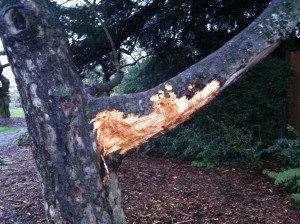
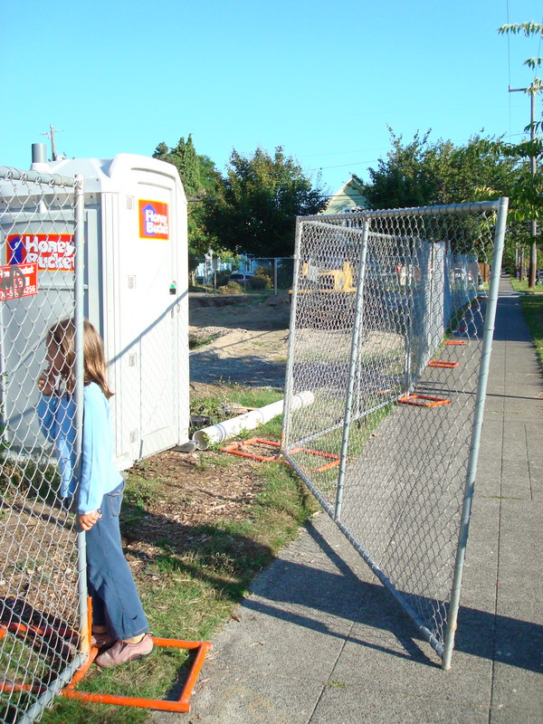
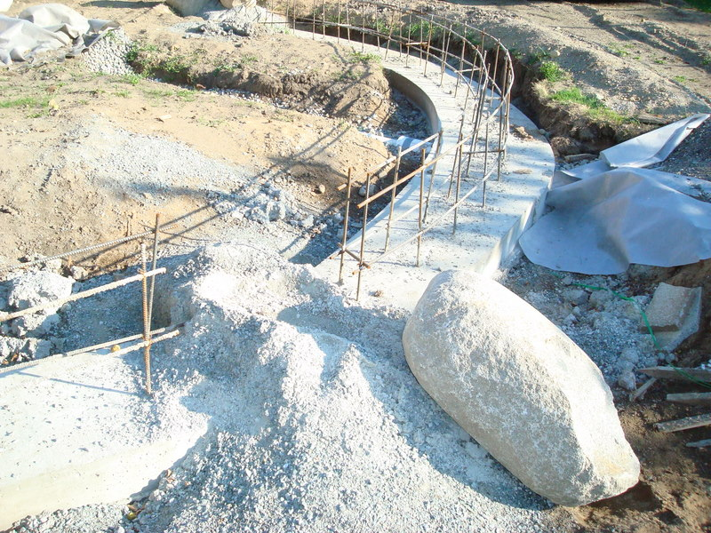
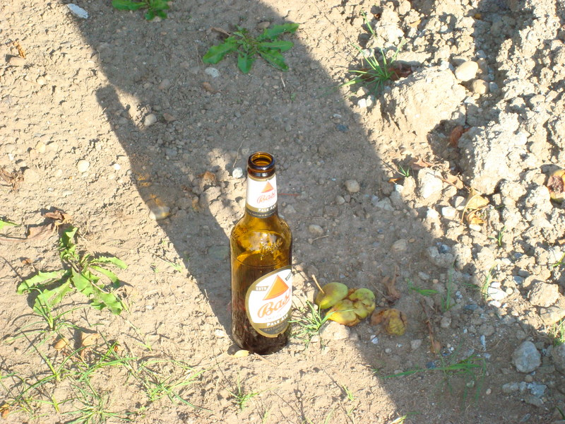
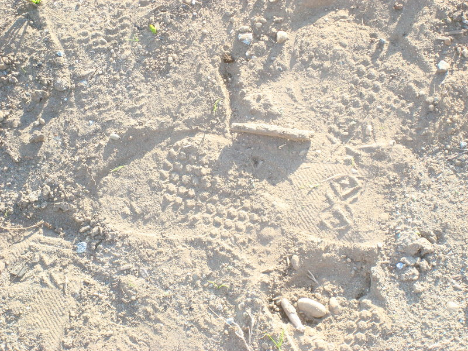
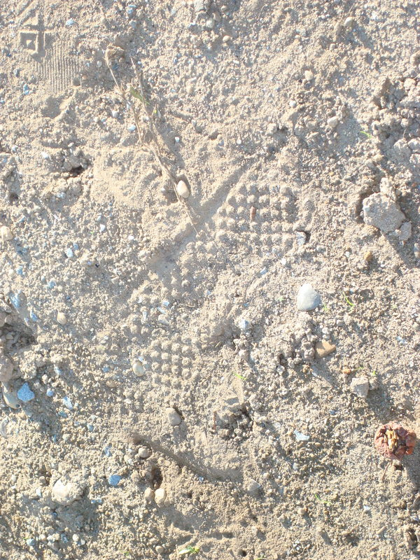

<?xml version="1.0" encoding="UTF-8"?><rss version="2.0"
	xmlns:content="http://purl.org/rss/1.0/modules/content/"
	xmlns:wfw="http://wellformedweb.org/CommentAPI/"
	xmlns:dc="http://purl.org/dc/elements/1.1/"
	xmlns:atom="http://www.w3.org/2005/Atom"
	xmlns:sy="http://purl.org/rss/1.0/modules/syndication/"
	xmlns:slash="http://purl.org/rss/1.0/modules/slash/"
	>

<channel>
	<title>vandalism &#8211; Friends of Ballard Corners Park</title>
	<atom:link href="http://ballardcornerspark.org/ballardcornerspark/category/vandalism/feed/" rel="self" type="application/rss+xml" />
	<link>http://ballardcornerspark.org/ballardcornerspark</link>
	<description>Just another WordPress weblog</description>
	<lastBuildDate>Tue, 12 Apr 2016 16:55:53 +0000</lastBuildDate>
	<language>en-US</language>
	<sy:updatePeriod>hourly</sy:updatePeriod>
	<sy:updateFrequency>1</sy:updateFrequency>
	<generator>https://wordpress.org/?v=4.7.2</generator>
	<item>
		<title>Vandalism to Apple Tree</title>
		<link>http://ballardcornerspark.org/ballardcornerspark/2011/01/vandalism-to-apple-tree/</link>
		<pubDate>Fri, 07 Jan 2011 20:14:04 +0000</pubDate>
		<dc:creator><![CDATA[David Folweiler]]></dc:creator>
				<category><![CDATA[vandalism]]></category>

		<guid isPermaLink="false">http://ballardcornerspark.org/ballardcornerspark/?p=1248</guid>
		<description><![CDATA[This damage was discovered sadly on Tuesday morning (1/4/11).  Beer cans nearby point to humans as the likely culprit, rather than a creature.  If you have any information about what happened, please let us know.]]></description>
				<content:encoded><![CDATA[<p>This damage was discovered sadly on Tuesday morning (1/4/11).  Beer cans nearby point to humans as the likely culprit, rather than a creature.  If you have any information about what happened, please let us know.</p>
<div id="attachment_1249" style="width: 310px" class="wp-caption alignnone"><a href="../../../wp-content/uploads/2011/01/apple-tree-damage.JPG"></a><p class="wp-caption-text">apple tree damage</p></div>
]]></content:encoded>
			</item>
		<item>
		<title>Vandals! (yet again)</title>
		<link>http://ballardcornerspark.org/ballardcornerspark/2008/09/vandals-yet-again/</link>
		<pubDate>Mon, 08 Sep 2008 05:43:02 +0000</pubDate>
		<dc:creator><![CDATA[David Folweiler]]></dc:creator>
				<category><![CDATA[construction]]></category>
		<category><![CDATA[vandalism]]></category>

		<guid isPermaLink="false">http://ballardcornerspark.org/ballardcornerspark/?p=336</guid>
		<description><![CDATA[Rebecca, my co-chair, called me this morning to report some overnight naughtiness at the park.  The fence had been opened. I guess boulder tipping might be the next young male prank.  Why do I say male?  Because I know the mind of a young male; I used to be one. Bass appeared to be the [&#8230;]]]></description>
				<content:encoded><![CDATA[<p><a href="../../../wp-content/uploads/2008/09/dsc02146.jpg"></a></p>
<p>Rebecca, my co-chair, called me this morning to report some overnight naughtiness at the park.  The fence had been opened.<span id="more-336"></span></p>
<p><a href="../../../wp-content/uploads/2008/09/dsc02147.jpg"></a></p>
<p>I guess boulder tipping might be the next young male prank.  Why do I say male?  Because I know the mind of a young male; I used to be one.</p>
<p><a href="../../../wp-content/uploads/2008/09/dsc02148.jpg"></a></p>
<p>Bass appeared to be the drink of choice last night.  I was a bit surprised; usually the park drinkers are further down the socioeconomic class &#8211; i.e. 40 ouncers.  Mark, Rebecca&#8217;s husband, and I found one bottle and three bottle caps.</p>
<p><a href="../../../wp-content/uploads/2008/09/dsc02149.jpg"></a></p>
<p>Recognize these footprints??</p>
<p><a href="../../../wp-content/uploads/2008/09/dsc02150.jpg"></a></p>
<p>more footprints&#8230;</p>
]]></content:encoded>
			</item>
	</channel>
</rss>
